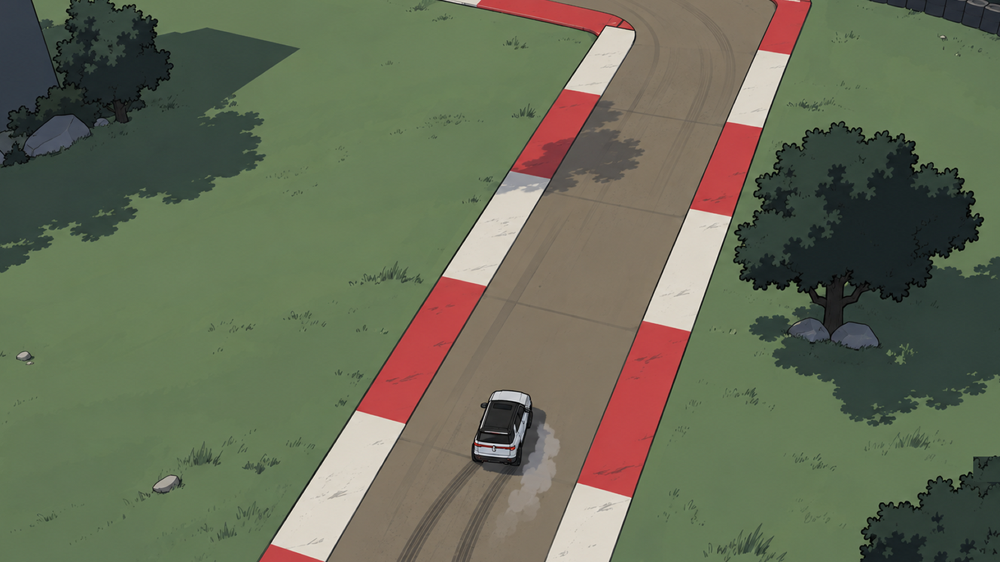
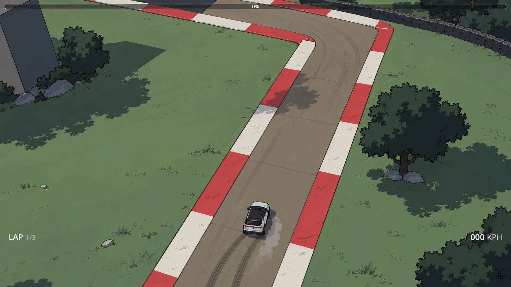
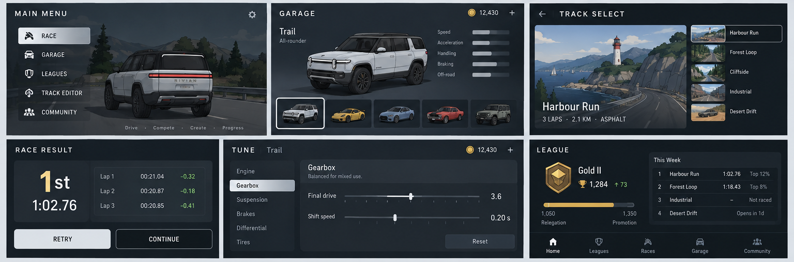
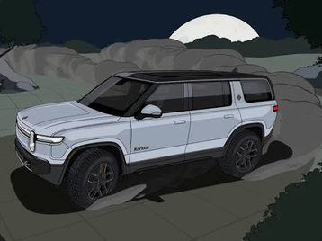

CIRCUIT / 01 · design revision 2.0
Two references. Two different jobs.
The gameplay screenshot defines the high, oblique overhead view. The menu board defines the mature cel-shaded look and dark interface language. The menu board's rear chase-camera panels are not part of the gameplay specification.
Open the interaction prototype →01 / Gameplay target · 1.15× framing
Entire scene magnified by exactly 15% around a fixed framing anchor. Same camera angle, same car-to-road proportions. This image is a reproducible framing mockup, not a Godot render; the car model has not been enlarged.

02 / Original gameplay reference

03 / General menu direction
Use these lower-board pages for dark surfaces, measured typography, restrained highlights and vehicle-led composition. Preserve required histograms, neighbourhoods, earned progression and free retries even where the reference omits them.

04 / Material and linework reference

Mature graphic-novel shading: natural restrained colour, defined planes, selective dark contours and stepped shadows. This is not a requirement to use a specific vehicle brand, a night scene, a toy-like style or glossy photorealistic paint.
Implementation contract
See UI_Art_Direction.md, Camera_contract.json and Visual_acceptance.md. The unmodified full menu board is preserved in references/menus_style_reference.png for provenance only.